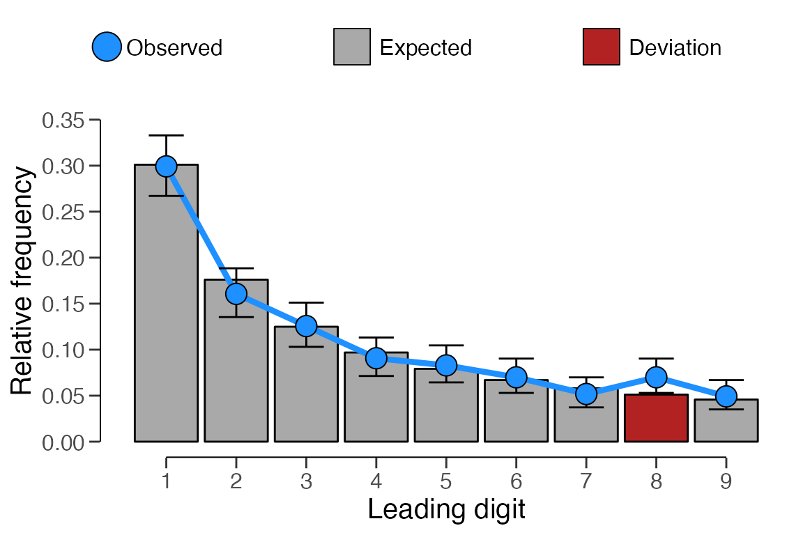
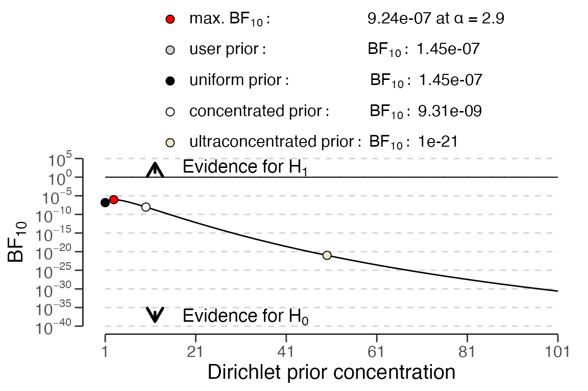

Introduction
Welcome to the ‘Digit analysis’ vignette of the jfa
package. In this vignette you are able to find detailed examples of how
you can incorporate the digit_test() and
repeated_test() functions provided by the package.
Function: digit_test()
The function digit_test() takes a vector of numeric
values, extract the requested digits, and compares the frequencies of
these digits to a reference distribution. The function either performs a
frequentist hypothesis test of the null hypothesis that the digits are
distributed according to the reference distribution and produces a
p value or a Bayesian hypothesis test of the null hypothesis
that the digits are distributed according to the reference distribution
against the alternative hypothesis (using the prior parameters specified
in prior) that the digits are not distributed according to
the reference distribution and produces a Bayes factor (Kass &
Raftery, 1995).
Example:
Benford’s law (Benford, 1938) is a
principle that describes a pattern in many naturally-occurring numbers.
According to Benford’s law, each possible leading digit d in a
naturally occurring, or non-manipulated, set of numbers occurs with a
probability p(d) = log10(1 + 1/d). The distribution of
leading digits in a data set of financial transaction values (e.g., the
sinoForest data) can be extracted and tested against the
expected frequencies under Benford’s law using the code below.
# Frequentist hypothesis test
x <- digit_test(sinoForest$value, check = "first", reference = "benford")
print(x)##
## Classical Digit Distribution Test
##
## data: sinoForest$value
## n = 772, MAD = 0.0065981, X-squared = 7.6517, df = 8, p-value = 0.4682
## alternative hypothesis: leading digit(s) are not distributed according to the benford distribution.
plot(x, type = "estimates")
You can also perform this analysis in a Bayesian fashion by setting
prior = TRUE, or providing a value for the prior
concentration parameter.
# Bayesian hypothesis test using default prior
x <- digit_test(sinoForest$value, check = "first", reference = "benford", prior = TRUE)
print(x)##
## Bayesian Digit Distribution Test
##
## data: sinoForest$value
## n = 772, MAD = 0.0065981, BF₁₀ = 1.4493e-07
## alternative hypothesis: leading digit(s) are not distributed according to the benford distribution.You can then check the robustness of the Bayes factor to the choice
of prior distribution using the plot() function with
type = "robustness".
plot(x, type = "robustness")
You can perform a sequential analysis of the Bayes factor using the
plot() function with the argument
type = "sequential". The sequential analysis includes a
robustness check as well.
plot(x, type = "sequential")
Function: repeated_test()
The function repeated_test() analyzes the frequency with
which values get repeated within a set of numbers. Unlike Benford’s law,
and its generalizations, this approach examines the entire number at
once, not only the first or last digit. For the technical details of
this procedure, see (Simonsohn, 2019).
Example:
In this example we analyze a data set from a (retracted) paper that
describes three experiments run in Chinese factories, where workers were
nudged to use more hand-sanitizer. These data were shown to exhibited
two classic markers of data tampering: impossibly similar means and the
uneven distribution of last digits (Yu et al.,
2018). We can use the repeated_test() function to
test if these data also contain a greater amount of repeated values than
expected if the data were not tampered with.
x <- repeated_test(sanitizer$value, check = "lasttwo", samples = 2000)
print(x)##
## Classical Repeated Values Test
##
## data: sanitizer$value
## n = 1600, AF = 1.5225, p-value = 0.0055
## alternative hypothesis: average frequency in data is greater than for random data.
plot(x)